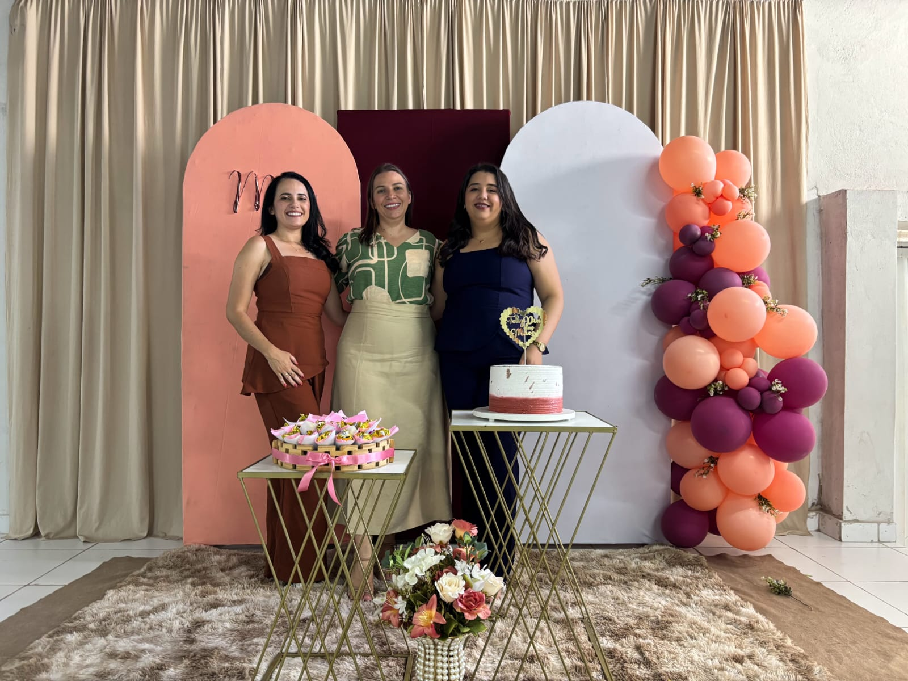

A nossa turma é formada por 29 alunos todos prontos para o que der e vier, em busca da nossa formação no curso tecnico. O nosso professor é o professor Adriano, nosso orientador sempre tentando trazer os melhores e mais faceis(nem sempre) conteudos, para nos ensinar da maneira mais pratica e rapida como programar e entender a lógica da programação. Nós apesar de sermos uma das turmas mais "barulhentas" temos muitas coisas boas a compartilhar com o nossos professores e entre nos mesmos fortalecendo nossa irmandade.
GESTORES

A nossa equipe gestora é formada por 3 mulheres :
-LEILA
-TEREZINHA
-VIRLANY
Elas tres sempre estão trabalhando para nos manter seguros e confortaveis n o ambiente escolar, para que posssamos sempre buscar por nossa evolução. Por mais que tenhamos levado inumeras broncas no nosso primeiro ano na escola, aprendemos que elas sempre estão lá quando precisamos e estão do lado dos alunos para juntos construirmos uma boa relação e vivermoss em conjunto ao longo da nossa jornada escolar.